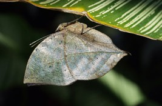
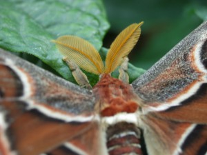

How do butterflies/moths spread their wings after emerging?

Christina Reiman Butterfly Wing Plants


How can you determine the sex of a butterfly?
What is the smallest and largest butterfly/moth found at Reiman Gardens
How do butterflies use their wing colors?
What is the difference of a butterfly and moth.
What do we do with the dead butterflies and moths.
What are the different life stages of a butterfly?
How long does a butterfly or moth live